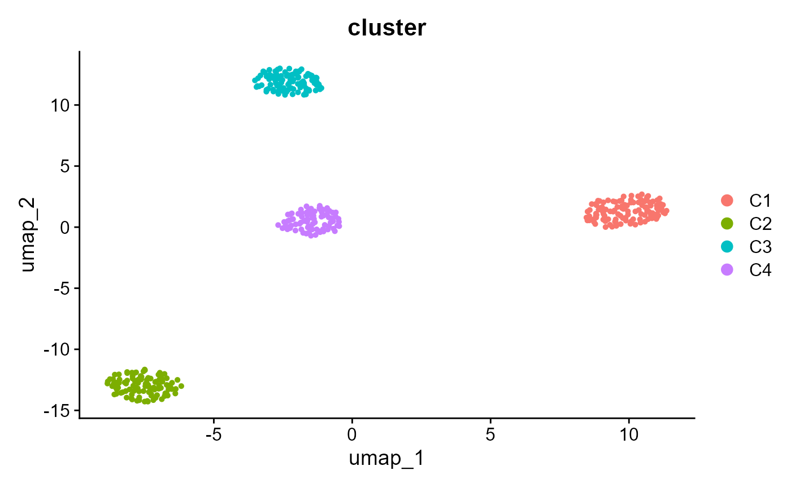

Example Seurat object for demonstrations
SeuratVisProExample.RdGenerate a small synthetic Seurat object suitable for examples and testing.
Usage
SeuratVisProExample(
n_cells = 300,
n_genes = 1000,
n_clusters = 3,
seed = 123,
spatial = FALSE
)Examples
obj <- SeuratVisProExample(n_cells = 400, n_genes = 1000, n_clusters = 4)
#> Modularity Optimizer version 1.3.0 by Ludo Waltman and Nees Jan van Eck
#>
#> Number of nodes: 400
#> Number of edges: 15293
#>
#> Running Louvain algorithm...
#> Maximum modularity in 10 random starts: 0.8748
#> Number of communities: 4
#> Elapsed time: 0 seconds
Seurat::DimPlot(obj, group.by = "cluster")
